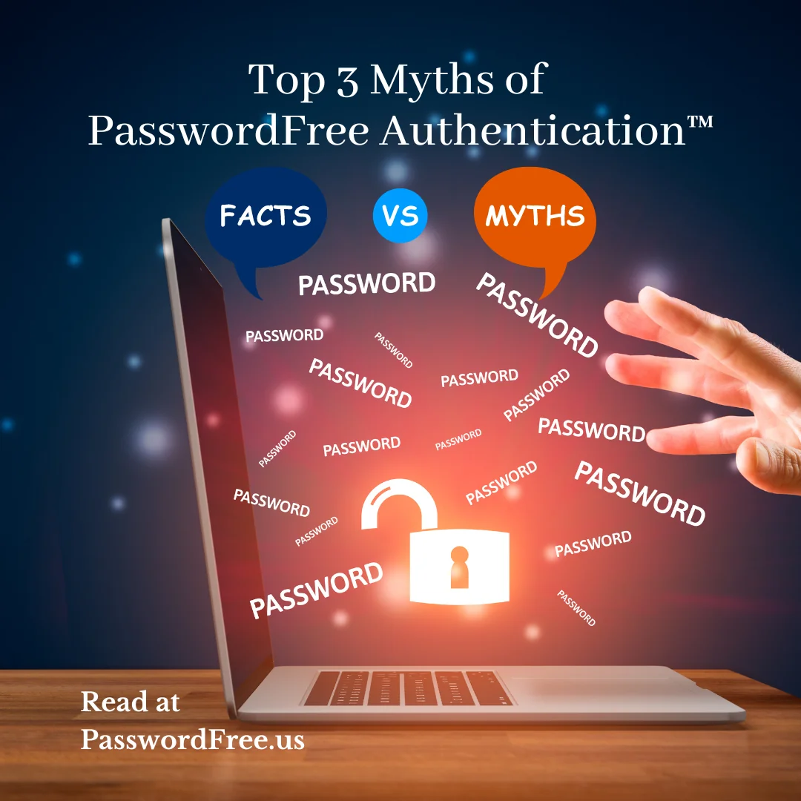

Getting rid of the password-shared secret method for authentication should be a top priority

MYTH 1
PasswordFree Authentication®
is less secure.
There seems to be this notion among security professionals that the harder you make it for the end user to authenticate, the more secure it is. The inverse of this is believed to be true as well –the easier it is to authenticate, it becomes less secure. While these statements can be true, they don’t have to be.
PasswordFree Authentication® uses a string of characters that are known to the user and are cryptically stored (hashed) in a database. Because the password is in two places, we refer to the password as a shared secret. The theory is that if you include numbers, upper and lower case letters, and special characters, do not allow common words, and increase the number of characters, then it becomes harder for another person to guess the password.
Authentication factors generally fall into three categories –something a user knows, something a user has, and something a user is (biometric). Combining multiple steps to authenticate is known as multi-factor authentication (MFA). Bad actors do not have to “guess” what a password is –they can hack the password database or just ask a user for their password. Because the password method is not very secure by itself, most applications, systems, and websites will require MFA.
The most common MFA practice is to use a password plus an additional one-time passcode or OTP. The OTP can be generated and delivered to the user in a variety of ways –locally generated in an app or special device, via SMS text, or via email. The use of a password plus OTP is really two of the same factor, something a user knows. Both the password and OTP can easily be obtained by asking the user to enter this information into a user interface that is presented by a bad actor.
True PasswordFree Authentication® will replace the shared secret of a hashed password with a decentralized, digital token that only resides in the secure environment of a user’s personal device. Most personal devices such as smartphones, tablets, Mac, and PCs now have a native biometric capability as well. Many of the best passwordless authentication products will also add the local biometric as an additional factor of authentication. The biometric factor is important as it also adds nonrepudiation, which removes the possibility of user account sharing. By adding an additional factor with the local biometric, authentication is completed by using two different factors -something a user has and something a user is.
MYTH 2
PasswordFree Authentication® is Hard for Users to Adopt
It is true that passwordless authentication is a new paradigm for users to adapt to. The biggest hurdle in accepting the new paradigm is registration. This is a perception that unfortunately came from bad experiences in deploying the more common MFA products. Those products didn’t focus much on simplicity because they were implemented in a work environment and the employee wasn’t given any other choices. The arduous registration process was often followed by making the user log back in using MFA, even though they were just verified. Another challenge with traditional MFA products is handling recovery in cases where the token device was unavailable. The recovery process required a user to go through registration all over again.
Technology has improved and better methods of registration such as scanning QR codes have made the adoption of PasswordFree Authentication® simple and intuitive. An implementation of passwordless authentication for existing users is as simple as redirecting them to a one-time registration screen after they authenticate with their existing credentials. This action usually takes a second or two and the user is then forwarded onto the screen they expected to see.
In addition to the token method of authentication, local biometrics have been incorporated into the MFA process in ways that are natural to the user. A facial or fingerprint scan is performed without disrupting a user’s natural motion.
MYTH 3
All PasswordFree Authentication® Products are the Same
Authentication for every user, whether they are at work or home, should be simple and secure. This should apply to systems and applications in the workforce and those used for personal business such as government websites, banking, healthcare, retail, etc. Unfortunately, not all PasswordFree Authentication® tools, applications,
and websites meet this criterion. Most will fail the simplicity check. Simplicity is the key to adoption and adoption is the biggest hurdle in getting a user community to adopt PasswordFree Authentication®. While steps like asking a user to wait for an email or read and type back 6 digits may seem easy enough, they are fraught with the opportunity to fail. For example, the email goes to a spam folder or takes too long to get delivered. People often multi-task or are dyslexic, making the task of reading, remembering, and typing back in 6 simple digits a very error-prone process. PasswordFree Authentication® should be as simple as a look, click, or tap.
Another consideration is simplicity’s sidecar, convenience. Many PasswordFree® tools and techniques are tied to a specific browser or device. Users must register the browser again if it's updated and they will end up with a new device once or twice a year. Support for registering more than one device and being browser independent is a must-have for PasswordFree Authentication®.
Replacing passwords with tokens does make authentication more secure because the shared secret is removed from the process. There are many different token-based authentication methods and this is where many PasswordFree Authentication® tools begin to become less desirable. Using a standard called OAuth, tokens are granted from social media and other online services such as Microsoft’s Office 365. The challenge with these types of tokens is that they are themselves granted by the service if the user authenticates with a username and password to that service. Numerous examples of users being tricked into authenticating with compelling login windows constructed by bad actors.
Thus, the vast majority of PasswordFree® MFA tools only meet NIST 800-63-3 AAL2. To obtain AAL3, “AAL3 shall use a hardware-based authenticator and an authenticator that provides verifier impersonation resistance.”Having verifier impersonation resistance is key to defending against Man-in-the-Middle, Browser-in-Browser, and website impersonation attacks. Like the password, a token isn’t very secure if there is still a way for bad actors to obtain it. Verifier impersonation resistance is better known in security circles as two-way authentication. According to one of the leading cyber security education firms, KnowBe4®, the most secure authentication will be two-way and invoke all three categories of authentication as well as some context.

Summary
For several years, at least 80% of all data breaches involve stolen passwords. Getting rid of the password-shared secret method for authentication should be a top priority this alone can significantly reduce your cyber-attack surface. Consider getting rid of other expensive MFA tools that are difficult for users to adopt and do not verify the requesting authentication service. Before you simply check the MFA box to pass an audit or lower your cybersecurity insurance, remember two key elements for authentication –simple and secure. We can continue to try and educate users and implement stronger and more arduous methods for authentication, or we can recognize that simple and secure PasswordFree Authentication® is the right path for all.